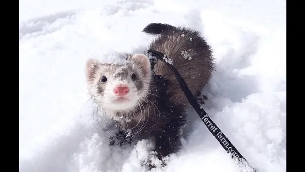

Upcoming events
Ferret Fashion Show Extravaganza
April 25, 2024
Mark your calendars for April 25th and get ready for the most stylish event of the season! Join us at the Ferret Fashion Show Extravaganza, where ferrets strut their stuff on the runway showcasing the latest trends in ferret fashion. From elegant evening wear to casual chic, witness these furry models dazzle the audience with their unique style and charm. Don't miss this opportunity to witness the glamour of ferret fashion!
Maypole Madness
May 10, 2024
Celebrate the arrival of spring on May 10th with a whimsical event that's sure to delight ferret lovers of all ages! Join us for Maypole Madness, where ferrets will frolic around a beautifully decorated maypole adorned with ribbons and flowers. Enjoy music, dancing, and games as we welcome the season of renewal with our furry friends leading the way. It's a day of joy and merriment that you won't want to miss!